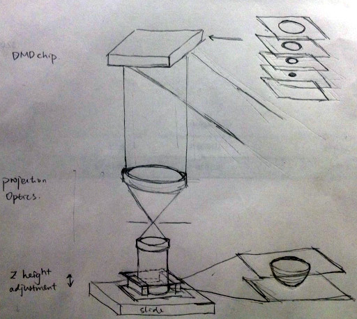

Technical illustration#
Nowadays, I rarely offer technical illustration services except to friends at work; it is no longer a profitable gig given the low hourly wage, and the emergence of text-to-figure generative AI, e.g. DALL-E. I still keep my own palette and pre-fab icons, in case I need to create and present novel ideas to investors.
Mid-2019: Speckle generation infographics#
{kind=link}
Duration: 8 hours
Purpose: lab meeting
Drawing tools: Inkscape, LaTeX, Public domain discrete optics symbols
The infographic (aka PowerPoint slide) was quickly drafted to illustrate various well-known mechanisms of artificial (pseudo-random) speckle generation. Initially intended for scientific publication, it failed to gain traction due to a lack of novelty.
This serves as a reminder that even in academic settings, investing time in creating visually appealing figures to demonstrate scientific value carries a high risk and low reward—particularly before securing R&D funding.
Mid-2017: 96-camera microscope#

Duration: 75 hours
Publication: Scientific Reports
Drawing tools: Inkscape, LaTeX, AutoCAD.
This figure is a prettified version of the internal PowerPoint drawings. The original drawings were effective in brainstorming and contractor negotiation communications; simply not appealing enough for scientific publication. There were also a need to highlight the benefit of shared illumination light paths for adjacent CMOS camera, that is only visible in orthogonal projections.
Mid-2016: Speckle pattern coding nanoscopic imaging for single cell in-situ multi-omics#
{kind=link}
Duration: 8 hours
Purpose: research scholar application
Drawing Tools: Inkscape
This is the cover figure for a postdoctoral fellowship application. Research fellow applications are, by nature, radical and disruptive. While drafting the figure, I anticipated that DNA-code-multiplexing FISH technologies (e.g., MERFISH) would become a commodity by the time research funding was secured—similar to how Moore’s law transformed mainframes into personal computers. The objective was to further lower the barrier to entry by integrating computational imaging techniques into sequencing-by-hybridization, a technique that requires a robust lab facilities to get the chemistry & optical SNR right.
Ultimately, this vision did not materialize due to a misjudgment of the biochemistry and biotechnology research landscape: assays or protocols requiring novel computational illumination and/or imaging are almost always perceived as inferior to those relying solely on conventional imaging systems (i.e. widefield fluorescence or confocal). High-tech optics & decoding methods are perceived as a weakness rather than strength.
Looking back, I occasionally reflect on the alternative scenario in which the technology was successfully developed and implemented via a joint-discipline research initiative.
Late-2015: Holographic imaging for microscopic fluorescent objects#
Duration: 40 hours
Publication: Optica, the Optical Society.
Drawing tools: FreeCAD, Inkscape.
It is conventional wisdom that fluorescence objects cannot generate Gabor holograms; a majority of the figure area is dedicated to fighting the presumptions. Three insets are included to call out the signal generation mechanisms; optical beating is responsible for encoding holographic phase information through the incoherent fluorescent light.
Late-2014: Bioprinting/lab on a chip#
{kind=link}

Duration: 20 hours
Publication: PNAS
Drawing tools: Inkscape, GIMP.
There is a need to illustrate the in-situ fabrication process as a spontaneous operation with walk-away automation. Therefore, all the electronics (e.g. light engine, FPGA) and control mechanisms (frame synchronization software) are excluded from the drawings. The zoomed-in view further highlights the 3-dimensional constructs in microscopic scale, so I borrowed the style from AA-sectional views of mechanical CAD drawings.